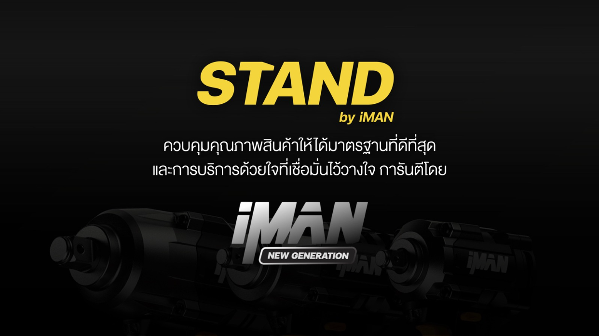
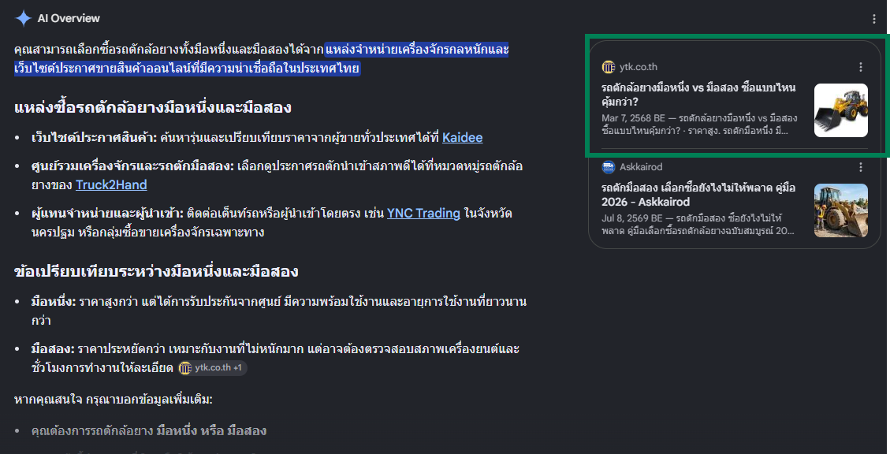
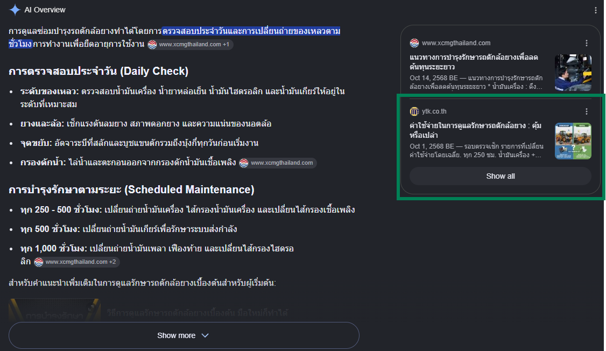

Selected Works (2024 - Present)
Scaling Growth Through Data & AI-Built Systems.
I believe that scaling ad budgets successfully requires more than just media buying skills. It demands robust technical infrastructure. This portfolio showcases how I bridge my 8 years of Performance Marketing expertise with custom MarTech development to solve complex business bottlenecks.
- Performance Marketing
- MarTech & Dashboards
- Business Process Automation
AI-Assisted Development ("Vibe Coding") — directing AI to build & secure production tools without a formal engineering background.
HTML, CSS, JS, Google Apps Script, REST APIs, Looker Studio, GA4.
WakuWaku Ecosystem.
Internal systems built solo through AI-assisted development ("vibe coding") to eliminate data silos, streamline creative handoffs, and track ad performance beyond standard platform limitations.
Content DB
A single platform that runs a campaign end-to-end, replacing scattered Drive folders, Sheets trackers, and chat threads with one Source of Truth per campaign. Structured in four parts:
- A —
- Approved Input Files, synced live from Google Drive with client/internal access control.
- B —
- Campaign Assets & Content, tracked by category and image prompt, paginated at scale (20+ assets per campaign).
- C —
- Performance & Ad Results, organized by funnel stage (Catch / Connect / Convert).
- Log —
- Production Audit Trail, a full edit history for team accountability.
Google OAuth login, autosaves to Drive every 2.5s (debounced to stay under API limits), and a one-click "Prepare Handoff" that bundles everything — data, audit log, a formatted PDF report, client instructions — into a single ZIP.
View Source ↗Influencer / KOL Matrix
A second, separate platform dedicated to the KOL pipeline — from briefing and asset uploading to performance tracking. It centralizes influencer communication plans and standardizes evaluation metrics for organic and paid reach.
View Source ↗Selected Campaigns.
Real-world applications of media buying strategies across Meta, Google, and TikTok. Focusing on rigorous A/B testing, funnel optimization, and measurable ROAS.
Mahajak Mega Deal
JBL | Harman/Kardon | JBL Quantum
The Challenge: Drive massive awareness and sales across diverse electronic brands with distinct target audiences simultaneously.
The Strategy: Allocated a 1.15M THB budget across Meta, Google, and TikTok. Segmented audiences strictly by brand persona (Gamer for Quantum, Music Lover for JBL, Bookworm for Harman). Restructured Search/Shopping keywords to capture high-intent traffic.
Dinosaur Rice (ข้าวไดโนเสาร์)
FMCG / Social Commerce Shift
The Challenge: Shift sales dependency from Marketplaces (Shopee/Lazada) to Direct-to-Consumer via Facebook Page.
The Strategy: Split content generation and ad targeting by generational behaviors (Gen X for direct product focus, Gen Y for lifestyle/cooking applications). Implemented strong CTA video assets to disrupt scrolling and drive immediate inbox inquiries.
STAND Tools (iMAN)
B2B & B2C / Equipment

Execution: Deployed "How to Use" video content for heavy tools (rotary drills, angle grinders) to build trust. Managed multi-channel E-commerce (Shopee, Lazada, TikTok) to capture converted traffic.
Sales Growth: +58.1% (in 2 months)
My Life Clinic & SEO
Healthcare / Lead Generation
Aesthetic & Physio Messaging
Designed messaging objectives focused on high-ticket services (Sculptra, Filler) and rehabilitation appointments.
- Physio Cost/Convo: ฿62.40 (229 Leads)
- Beauty Cost/Convo: ฿104 - ฿1,999
SEO / GEO / AEO Evidence
Extended keyword strategy beyond classic SEO into GEO (Generative Engine Optimization) and AEO (Answer Engine Optimization) — structuring content so it surfaces in AI-generated answers (Google AI Overviews, ChatGPT, etc.), guided by AI-assisted research rather than manual keyword tools alone.

